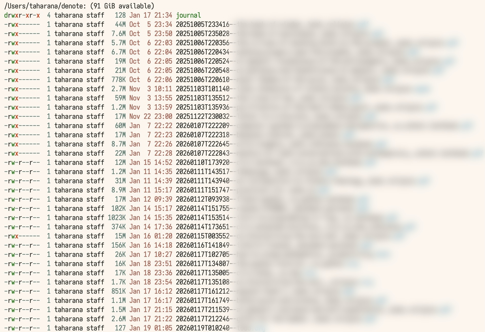

1-19-2026
As of today, I use Doom Emacs with denote. My theme is ef-cyprus. I have experimented with org-roam and denote-roam (using both denote and org-roam simultaneously), but ultimately decided to stick with denote alone. The zettlekasten feature of org-roam, although visually appealing, was not helpful for my needs. With denote, I can view my files in regular org. The tag-naming scheme in Denote lets me keep all my documents in one folder and search for them easily.
I use nvim as my code editor, with the gruvbox theme. I use Kitty as my terminal with tmux. For my tiling manager, I use aerospace.
